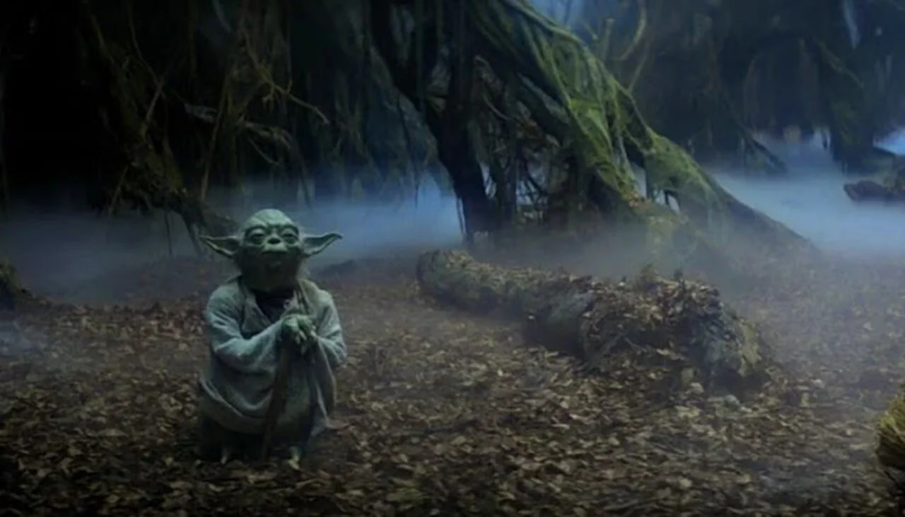

After rescuing Han, Luke returns to Dagobah to complete his training with Yoda. When he arrives, he finds that his old master has become weak and is nearing the end of his life.
Before becoming one with the Force, Yoda confirms what Luke feared: Darth Vader really is his father. Luke also learns that there is another Skywalker.
The spirit of Obi-Wan Kenobi reveals the rest of the truth. Leia is Luke's sister.
Yoda leaves Luke with one final responsibility: